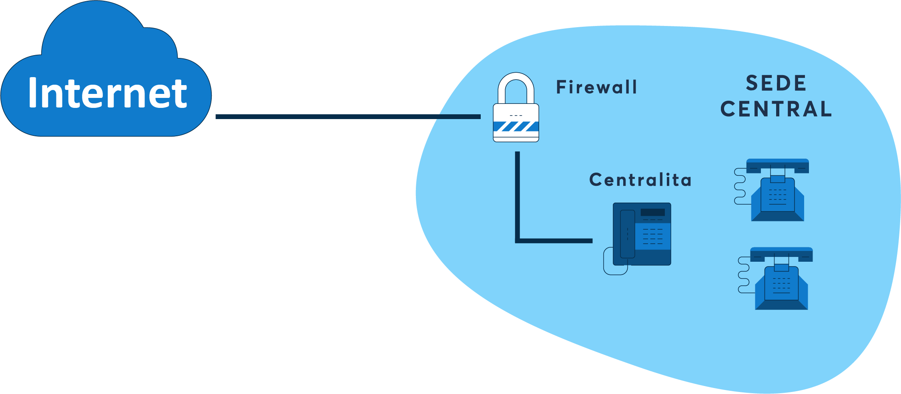

Seguridad en la comunicación de datos
Debido a que a diario existen comunicaciones e intercambio de datos entre distintos usuarios y computadoras, se necesitan medidas de seguridad en la red para asegurar que los datos que viajen durante su transmisión sean protegidos, cumpliendo los siguientes tres requisitos:
- Integridad: La alteración de los datos únicamente será realizada por quienes estén autorizados.
- Confidencialidad: La información solamente será accesible para los entes autorizados y no será expuesta ni revelada para los que no tengan la autorización.
- Disponibilidad: La información y recursos deberán estar disponibles para los entes autorizados.
Si bien el avance de la tecnología ha traído consigo grandes avances y facilidades para la humanidad, a su vez, los cibercriminales y piratas informáticos se vuelven más hábiles en sus distintas amenazas y ataques por lo que, ante nuevos ataques informáticos, distintas medidas y herramientas de seguridad informática son necesarias, mientras que algunas ya se encuentran obsoletas, otras son difíciles de atacar para los cibercriminales debido a su eficiencia. A continuación, se presentan algunas de ellas:
a. Redes Perimetrales
Se pueden comparar con las redes perimetrales de las canchas de fútbol, las cuales brindan seguridad tanto para el jugador como para el espectador en el sentido que la pelota de fútbol no salga volando de la cancha, y que todo se quede dentro de la cancha.
Asimismo, en las redes informáticas, las redes perimetrales (también conocidas como DMZ) es una red de seguridad que se encuentra entre la red interna de una organización e Internet, y protegen los datos de forma que nadie externo a la red y sin autorización pueda acceder a éstos, y así, permiten la conectividad segura entre las redes de la nube y las redes de los centros de datos locales o físicos. También permiten la conectividad segura hacia Internet y desde este.
Gracias a las redes perimetrales se tiene un mejor control sobre el tráfico entrante y saliente, teniendo consigo grandes ventajas:
- Protege a la empresa u organización de ataques externos: Se establece una barrera entre la red interna y el exterior, lo que ayudará a evitar que los atacantes externos causen daños en la empresa.
- Detección de intrusiones: Al establecer una barrera entre la red interna y el exterior, las redes perimetrales ayudarán a detectar intrusiones, bloquear el tráfico sospechoso y tomar medidas contra éstas.
- Protección contra ataques DDoS: Los ataques DDos consisten en el ataque a sistemas, servidores o redes con tráfico para agotar los recursos y ancho de banda, teniendo como resultado la incapacidad de la víctima de procesar peticiones. Con la red perimetral, gracias a la barrera creada entre los recursos internos y el exterior, será posible de evitar y bloquear los ataques DDoS.
- Protección contra el robo de información: Naturalmente, al estar los datos de la red interna de la empresa protegidos gracias a la red perimetral informática, esto ayudará a evitar que los atacantes accedan y roben información de la red interna.
Por sobre todo, se tiene garantizada una mejora de la seguridad de la red, protegiendo los datos y la red interna de los ataques externos, ayudando también a controlar el tráfico entrante y saliente.
b. HoneyNets

Las HoneyNets, cuya traducción literal significaría una red de miel, hace alusión a como su nombre indica, una red que similar a la pegajosa miel, sirve como una red “trampa” para los ataques.
Antes de definir qué es una HoneyNet es necesario saber qué es una Honeypot, un sistema señuelo destinado a ser atacado o comprometido, con la capacidad de detectar y registrar estas acciones.
Ahora bien, una HoneyNet es el Honeypot más complejo, una herramienta de seguridad que cuya característica principal es ser una red completa para ser sondeada, atacada y comprometida por hipotéticos intrusos y atacantes, compuesta por un conjunto de sistemas creados para recibir dichos ataques junto a una serie de mecanismos encargados de monitorear, registrar y controlar estas acciones y ataques.

Su mayor diferencia con otros honeypot es que, debido a ser una red completa, puede estar compuesta por distintos sistemas trampa, como Linux, Solaris o Windows, de forma que proporcione un ambiente más creíble y real desde el punto de vista del atacante; además, permite aprender un mayor y variado número de tácticas de ataque.
Su nuevo enfoque a diferencia de otras herramientas de seguridad de Honeypot es la de no irse tanto hacia los objetivos de falsear datos o engañar a un posible atacante, sino que su objetivo principal se enfoca en recoger información real de cómo actúan los atacantes en un entorno de verdad, monitoreando sus acciones y ganando experiencia, de forma que se puedan analizar y encontrar nuevas estrategias, herramientas y ataques sin que el atacante perciba que está siendo observado.